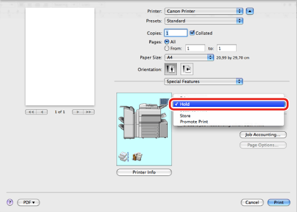
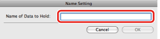

Temporarily Storing a Print Job in a Hold Queue
You can temporarily store print jobs in a special box (hold queue) in the printer.
The operator can change the settings for jobs in the hold queue, and the order in which they are printed. Print jobs that are in a hold state are printed by an output instruction.
|
NOTE
|
|
Depending on the printer model you are using, this option may not be available.
|
1.
From the [File] menu of the application software, select [Print].
The [Print] dialog box is displayed.
2.
The [Special Features] preferences pane is displayed.
3.
Select [Hold] from [Job Processing].

4.
Click [Print] in the [Print] dialog box.
5.
In the [Name Setting] dialog box, enter a name in [Name of Data to Hold].

6.
Click [OK] in the [Name Setting] dialog box.